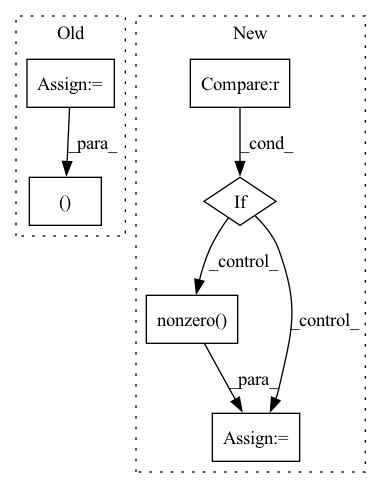

Pattern ID :16624
Before Change
return dense_to_sparse(adj)
else:
idxs = np.nonzero(adj)
edge_index = np.stack(idxs)
edge_weights = adj[idxs]
return edge_index, edge_weights
def edge_index_to_adj(edge_index: TensArray,
edge_weights: OptTensArray = None,After Change
assert 2 <= adj.ndim <= 3
assert adj.shape[-1] == adj.shape[-2]
if backend is torch :
adj = torch.transpose(adj, -2, -1)
index = adj.nonzero(as_tuple=True)
else:
adj = np.swapaxes(adj, -2, -1) // transpose
index = adj.nonzero()
In pattern: SUPERPATTERN
Frequency: 3
Non-data size: 6
Instances Fragment ID: 55829490
Project Name: torchspatiotemporal/tsl
Commit Name: 50089afdf23de12eb6d11e9d5e7e64d949d45611
Time: 2022-08-18
Author: ivan.marisca@hotmail.it
File Name: tsl/ops/connectivity.py
M Class Name: AnonimousClass
N Class Name: AnonimousClass
M Method Name: adj_to_edge_index(2)
N Method Name: adj_to_edge_index(1)
M Parent Class:
N Parent Class:
M File Name: tsl/ops/connectivity.py
N File Name: tsl/ops/connectivity.py
M Start Line: 92
M End Line: 114
N Start Line: 106
N End Line: 145
Before Change
if isinstance(adj, Tensor):
return dense_to_sparse(adj)
else:
idxs = np.nonzero(adj)
edge_index = np.stack(idxs)
edge_weights = adj[idxs]
return edge_index, edge_weights
def edge_index_to_adj(edge_index: TensArray,
edge_weights: OptTensArray = None,After Change
assert 2 <= adj.ndim <= 3
assert adj.shape[-1] == adj.shape[-2]
if backend is torch :
adj = torch.transpose(adj, -2, -1)
index = adj.nonzero(as_tuple=True)
else:
adj = np.swapaxes(adj, -2, -1) // transpose
index = adj.nonzero()
Fragment ID: 55829475
Project Name: torchspatiotemporal/tsl
Commit Name: f28e5a2fddc34eeb90a13c113512c8ab12b6138b
Time: 2022-07-20
Author: ivan.marisca@hotmail.it
File Name: tsl/ops/connectivity.py
M Class Name: AnonimousClass
N Class Name: AnonimousClass
M Method Name: adj_to_edge_index(2)
N Method Name: adj_to_edge_index(1)
M Parent Class:
N Parent Class:
M File Name: tsl/ops/connectivity.py
N File Name: tsl/ops/connectivity.py
M Start Line: 92
M End Line: 114
N Start Line: 106
N End Line: 145
Before Change
// the probe, drone, and SCV are not counted in build order
worker_type_list = [84, 104, 45]
// the pylon, drone, and supplypot are not counted in build order
supply_type_list = [60, 106, 19]
diff[0, worker_type_list] = 0
diff[0, supply_type_list ] = 0
diff_count = torch.sum(diff).item()
print("diff between unit_counts_bow", diff_count) if debug else None
After Change
diff_count = torch.sum(diff).item()
print("diff between unit_counts_bow", diff_count) if debug else None
if diff_count >= 1.0 :
print("diff:", diff) if debug else None
index = torch.nonzero( diff, as_tuple=True) [-1]
print("index:", index) if debug else None
index = index.detach().cpu().numpy().tolist()
previous_bo.extend(index)
return previous_bo
Fragment ID: 55829498
Project Name: liuruoze/mini-alphastar
Commit Name: a115d8c35ded3fa3d608df5576d72a17cf941787
Time: 2021-12-10
Author: liuruoze@163.com
File Name: alphastarmini/lib/utils.py
M Class Name: AnonimousClass
N Class Name: AnonimousClass
M Method Name: calculate_build_order(3)
N Method Name: calculate_build_order(3)
M Parent Class:
N Parent Class:
M File Name: alphastarmini/lib/utils.py
N File Name: alphastarmini/lib/utils.py
M Start Line: 126
M End Line: 145
N Start Line: 111
N End Line: 135